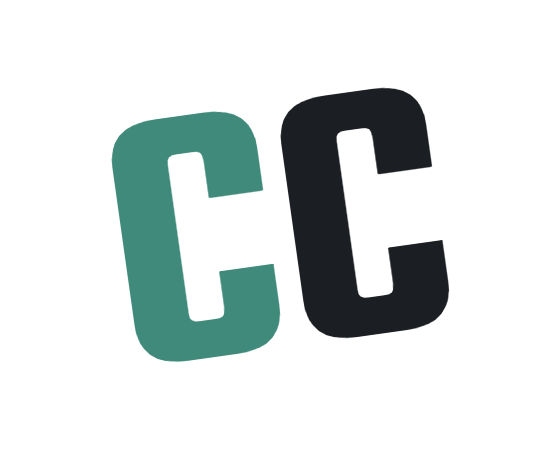

One scan. One second. Full lead captured. Let me show you.
Step 1 — Point and Scan
Card and catalog open instantly.
Saved permanently on their phone. No app. No login.
Step 2 — One Tap
They tap to share their contact.
Name, company, phone — your dashboard.
Step 3 — Before They Put It Away
Lead logged. Done.
Before they put their phone away.
Step 4 — Ten Seconds Total
Two taps. Under ten seconds.
They have your catalog. You have your lead.
Get your free
digital card.
https://call.cards
